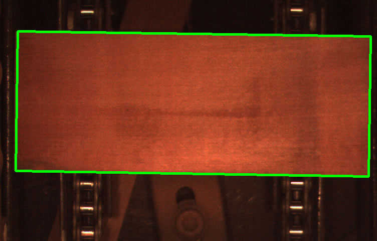
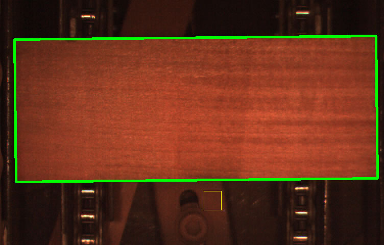
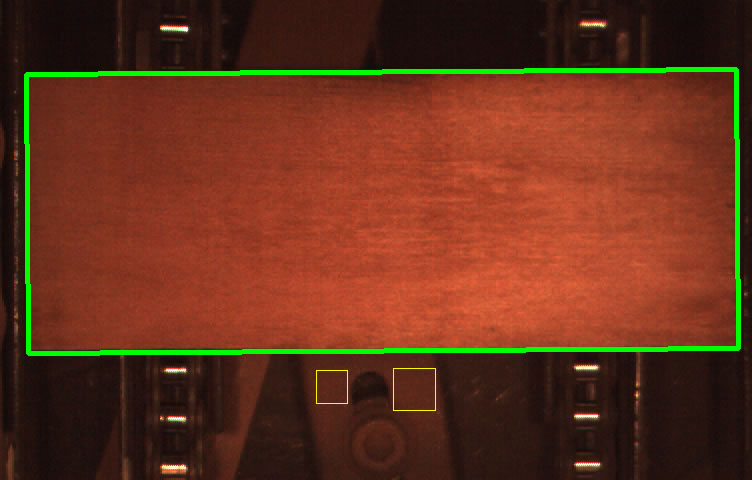
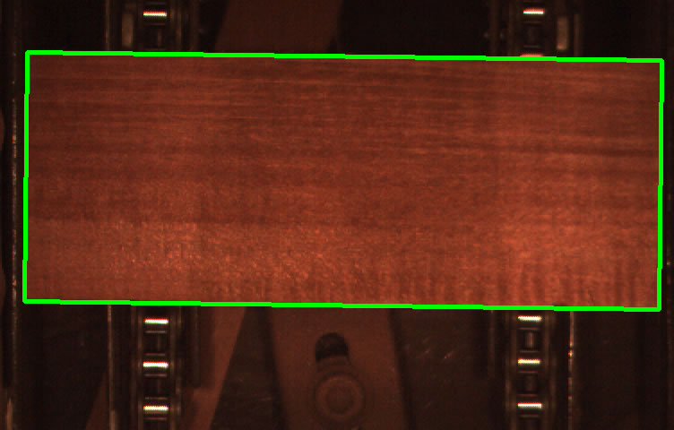
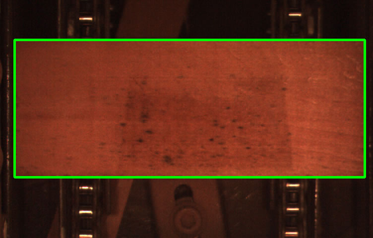
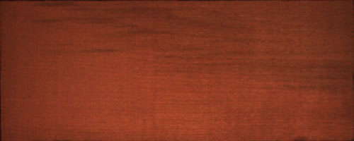
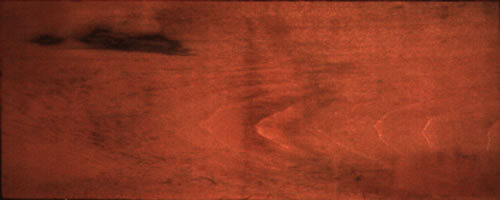

Wood Board Processing Using Computer Vision
Author: Deqing Wang
Mail:
1. Wood board segmentation and size measure





2. Wood surface quality detection and classification
This database contains 207 good wood image samples and 207 bad samples in bmp format.
[Database Download]，Password: t50p
Reference:
[1]Deqing Wang, Zengwu Liu, and Fengyu Cong, Wood Surface Quality Detection and Classification Using Gray Level and Texture Features, in Advances in Neural Networks – ISNN 2015, X. Hu, et al., Editors. 2015, Springer International Publishing. p. 248-257.
[Paper Download]
Good Sample:

Bad Sample:

This page is supported by website www.matlab.org.cn